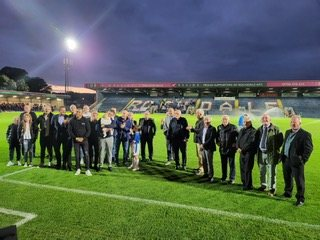
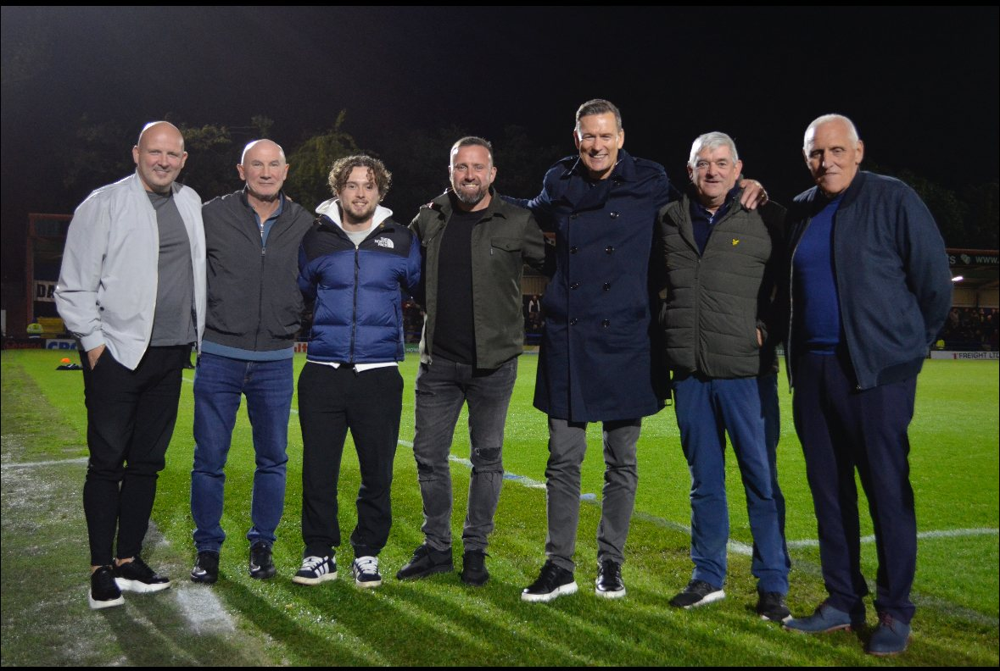

Former Players Association
Reuniting everyone who has worn the shirt — and bringing them back to the Crown Oil Arena to meet the supporters who remember them.
← Back to the TrustAfter many years of talking about it, the Rochdale Former Players Association launched before the Dale v Colchester United match on Friday 27 August 2021, celebrating the club's 100th year in the EFL.
The evening brought together ex-colleagues from the 1960s to modern times in the 1907 Lounge, sharing stories and listening to two Dale legends — Shaun Reid and Gary Jones — followed by a half-time parade that drew a rousing response from the crowd. Shaun Reid rounded off the night by presenting Aaron Morley with the Man of the Match award.
The idea came from a push by the Dale Trust — particularly then-Chairman Col Cavanah — endorsed by the PFA as part of a wider effort to see clubs across England engaging with their former players. Keith Hicks took on the coordinator's role, assisted by Siobhan McElhinney, then Assistant Community Manager, and both continue in those roles today.
Membership is free to anyone who has played at least one first-team game for the club.


A remarkable season on and off the pitch, with Dale promoted back into the English Football League after beating Boreham Wood at Wembley in the National League play-off final.
Off the pitch the FPA was busy throughout, running hospitality at home matches: ex-legends entertaining pre-match diners with Q&A sessions in the 1907 Lounge, a half-time presentation to the crowd, and drawing the 50/50 winners.
Sixteen former players appeared as guest speakers at pre-match hospitality across the season, with seven at the reunion evening and Willie Burns as guest of honour for the Trust's Exiles Day.
Guest appearances also came from Jamie Willoughby (Rochdale AFC director) against Aldershot Town, Oliver Whatmuff when unable to play against Eastleigh, and Cameron Ogden (co-chairman) for the visit of York City.
Thanks go to every player who took time out to support the hospitality initiative — sometimes in the most dire weather — but always ready with amusing and interesting stories from their years at the club.
Membership is free to anyone who has played at least one first-team game — and anyone wanting to volunteer with the project is very welcome.
Email Keith Hicks rochdalefpa.com →Articles on Dale legends can be found at www.rochdalefpa.com, and news of events on the Rochdale Former Players Association Facebook page.